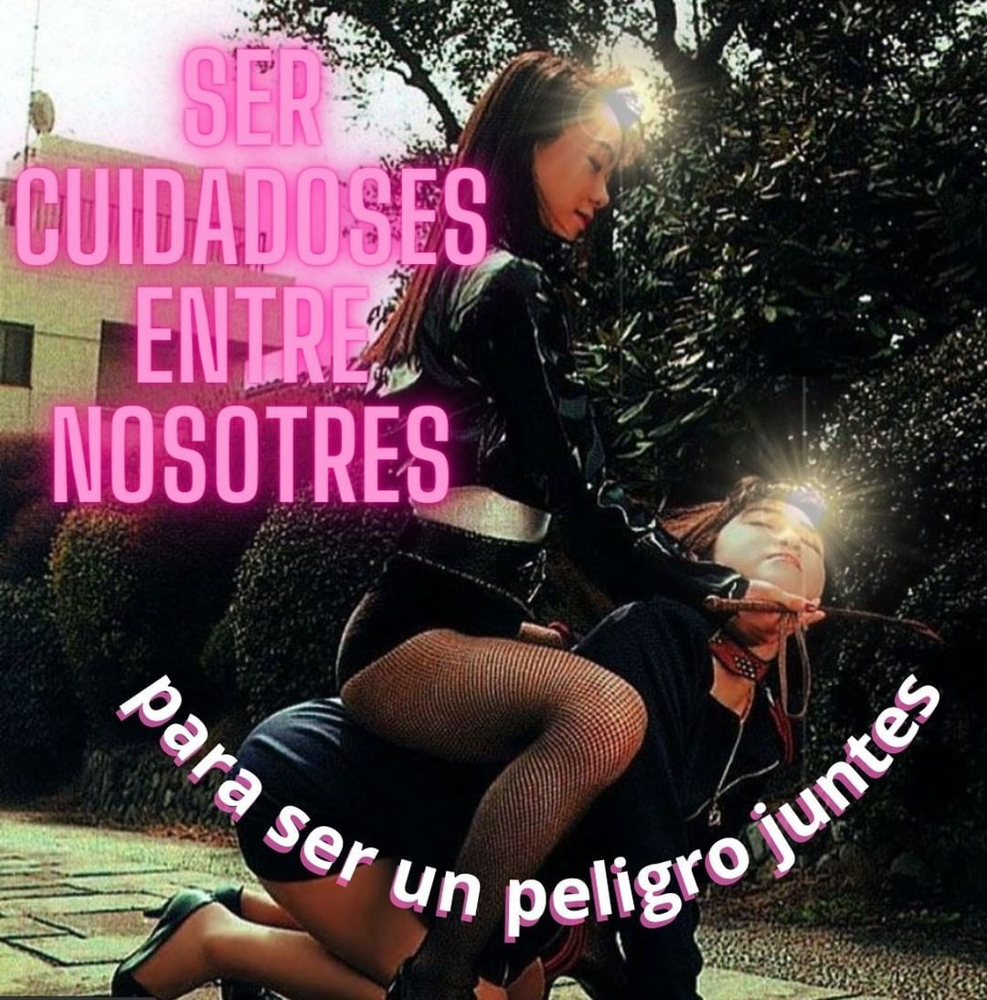

14 me pierdo en un bordoneo porque bordoneando
me abandono de la palabra y quiero que seas
ahora de mi silencio una traba
o que en el diantre de la autoformación subjetiva constante de nuestras ánimas populares en este siglo eterno y flagelante
algo calle
de pronto
y pase o de paso al viento
me achaque de lo mío y junte la violencia
aprendida del mundo en mi carne
sea un desliz que por favor no te toque ni te muerda

porque quiero también ser una rémora vertiginosa de papeles quemándose
en aceite usado o de ese orden malabar
medio curado por las nuevas narrativas metropampeanas con mueca cyborg
como si quisiera todo el tiempo saber cómo
se actualizan
las sensibilidades clasemedieras más perturbadas
me canso y me hundo puede ser
en las ruedas del calor que te convocan
por puro desperdicio por puro
año viejo recuperado en dos croquetas mal hechas de todas
las cosas
que amé y perdí
es que a veces
el vamoacharlarlo mejor se cancela y deja
espacio a otros fluidos discursivos
que toman tal vez la forma de un bardito o una mosca en el espacio
y decidamos no matarla decidamos
que lata con tal de sentir nuestros coras sobrevolando el enrosque
sonando con mayor o menor intensidad según su errancia
antes de que vuelvan finalmente monigotes
las bandurrias perdidas como un reflejo
casi nocturno de un mar árido quizá
o de esa lata de cerveza vacía que nos mira desde un charco en la vereda
a confundirse con nuestros sueños
sueños mochos exiliados del tiempo
pero que el beso de suelo y cielo todavía reclaman para sí
y devoran insecticidas las soledades cosechadas de tanta
calaña semiautoinflingida
que surcan modo cáscara las paredes y los campos
porque somos ese pasto y yo te quiero
tanto
que a nosotras van
mis horas jóvenes como fantasmas de una nuca que te sopla para no
asediar las introspectivas intocables ni enredar
de más las lenguas en el cuero
de este apocalipsing performado en el entonces qué
nos gotea y de ahí
de nuevo la mosca de un favor entumecido
donde ya no sé sabe quién le debe qué a quién
todo eso estremece y se cuece
en el sendero semiurbano que elegimos juntas
caminar pero sin saber nunca
bien adónde lleva
ni quién lo traza realmente tengo
en las líneas de tu mano la silueta de mi cuerpa mixturada
por la sangre celeste y la biografía periférica
por la historia de esta tierra que se nos cuela por todos los agujeros y las venas
esa es la única huella que sigo
y ojalá me pierda